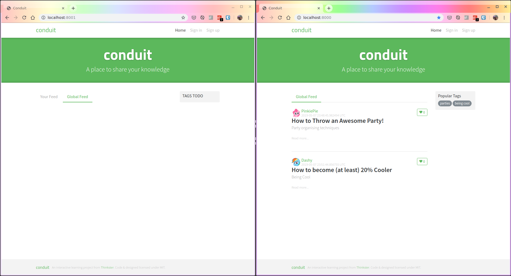

or jump onto #qfpl on irc.freenode.net.
or jump onto #qfpl on irc.freenode.net.This workshop is built as an obelisk application, so getting it runnable involves getting the obelisk command and running it so that you have all of the project dependencies. Whichever option you pick, please make sure to run all the steps so that you have no unexpected need to download things in the workshop.
This uses nix so you will need nix first. If you don't already have this setup and working, then it will be best to use the VM or docker images that have everything already installed for you. Nix also doesn't fully work on windows yet, but it is very close.
There's also a postgres database to setup. The VM and docker compose setup have this running already. You can use the docker database standalone in Nix/NixOS.
The VM is the easiest option as it has most things pre-installed, running and ready to go. The only thing you may want to do is configure a text editor (it has vim, spacemacs and vscode preinstalled).
The docker route should use less resources since it doesn't have to run a whole VM and allows you to use your editor on your machine. The docker way has some mild annoyances (writing files owned by root to the checkout and the haddocks aren't as accessible). The VM is probably the best route unless VBox doesn't work for you.
The Nix/NixOS route is the easiest if you are comfortable with nix. It has been mostly tested on Linux, but obelisk is supported on MacOS and at least one person has successfully built the workshop on MacOS. So it should be fine.
The VM and the Docker image is around 3GiB to download. With nix, it's about 700MiB of dependencies to download from the caches.
In all cases, the end result of this process should look like this, with the skeleton workshop code running of http://localhost:8001 and the example code running on port 8000 and showing test data that involves ponies. :)
Note that the example project is included in the workshop as a submodule, so if you checkout code, you only need to check out https://github.com/qfpl/reflex-realworld-workshop yourself! It's included as a submodule so that we can always keep the workshop and the examples pinned together so you don't accidentally have a newer/older example that could be confusing.

If any of these steps don't work for you, please either file a github issue, or jump onto #qfpl on irc.freenode.net.
Ben will have some USB drives with the VM and the docker layers on them if you're stuck on the day.
Download the OVA from running:
curl https://s3-ap-southeast-2.amazonaws.com/reflex-realworld-workshop/reflex-realworld-workshop.$(curl https://s3-ap-southeast-2.amazonaws.com/reflex-realworld-workshop/OVA_LATEST_VERSION).ova > workshop.ova.
Be careful about your shell being friendly and escaping the parens when you paste!
If you don't have curl, just hit the OVA_LATEST _VERSION_FILE in a browser and take that number and download the appropriate version with this link: https://s3-ap-southeast-2.amazonaws.com/reflex-realworld-workshop/reflex-realworld-workshop.$VERSION.ova.
Import that appliance by opening up the virtual box gui > File > Import Appliance > select file. The defaults should be fine.
Boot that VM up. Once it is up, open up three terminals. These will download some final things, so it's important to do this before the workshop.
cd reflex-realworld-workshop then ob runcd reflex-realworld-workshop/reflex-workshop-example then ob runcd reflex-realworld-workshop then devenv/nix/hoogle-serverYou should be able to open three tabs up:
Once you have this setup, you should just be able to git pull and rerun both ob runs on the night before lamdbajam. This will ensure you have the latest code and there should be no huge redownloads or needing to download the whole image again.
Please watch the repo for releases and/or join gitter to keep in touch or ask questions! :)
Checkout this code if you haven't already:
git clone --recurse-submodules https://github.com/qfpl/reflex-realworld-workshop.git
You will need docker compose installed.
The jsaddle development environment only works in chromium, so if you use firefox or safari only please install chrom before the workshop!
Run this command: devenv/docker/ob run-example and load up http://localhost:8000 . If you see a page loaded with some articles, everything is all good.
Run this command devenv/docker/ob run-workshop and load up http://localhost:8001 . If you see a much blanker page with no errors, you're pretty good!
Once you have this setup, you should just be able to git pull && git submodule update and rerun both ob runs on the night before lamdbajam. If I've had to change the image at all, this will download another ~3GiB at this time. Sorry! You'll have to reset the config files back so that the pull can happen.
Please watch the repo for releases and/or join gitter to keep in touch or ask questions! :)
Checkout this code if you haven't already:
git clone --recurse-submodules https://github.com/qfpl/reflex-realworld-workshop.git
Add the nixcache.reflex-frp.org, qfpl.cachix.org and hydra.qfpl.io caches to your nix.conf or nixos configuration.
See nix.conf for a nix example or see a NixOS example.
Follow the obelisk installation instructions ignoring the cache part because you already set that up in the last step.
The jsaddle development environment only works in chromium, so if you use firefox or safari only please install chrom before the workshop!
The easiest way is to use docker. docker run -p 5432:5432 benkolera/reflex-realworld-workshop-pg:latest will give you a running database on localhost with the schema, data and credentials all good. This way is easiest if you already have docker. If you are already running postgres, you'll get an error so change the port to -p 5433:5432. Just be sure to change config/backend/pgConnStr to have a postgres:/conduit:conduit@localhost:5433/conduit in both the workshop and examples to reflect the port change.
If you don't have docker and would rather set things up in postgres yourself what we need is:
Everything should be cached on qfpl.cachix.org. If you've setup the caches it should just be some downloading (of about 750MiB) rather than building a lot of code from source. Chris McKay has built it on MacOS nix and it worked fine and should now be cached thanks to him too. :)
Run ob run in: ./reflex-realworld-example and then check out http://localhost:8000 . You should see a page with some articles and ponies on it. If this works, the DB is all setup and the code is built.
Repeat ob run in this checkout and check out http://localhost:8001 . This should be more blank, but it should load a page with the nav bar and title.
If this is all happy you are good to go! You may need to git pull before the workshop again, but that'll be a much less painful experience.
Once you have this setup, you should just be able to git pull and rerun both ob runs on the night before lamdbajam.
Please watch the repo for releases and/or join gitter to keep in touch or ask questions! :)